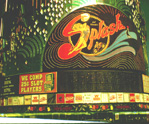

呂清夫 撰文

俗語說，馬無野草不肥，人無橫財不富。現代人似乎想錢想瘋了，所以草根大眾迷上彩券、六合彩、大家樂、賭職棒、玩股票……。立法委員更通過了「博奕條款」，連中經院的學者也說，賭博有益稅收！真是令人搖頭。從中央到地方，從官方到民間，大家似乎都想不勞而獲，難怪電視訪問學生暑期最喜歡什麼樣的打工時，他們會說，最好什麼都不必做就有錢，其次才是錢多事少離家近。為什麼中央與官方要帶頭做這種事？這裡面似乎有一個迷思，亦即靠賭博抽稅是一頓可以白吃的午餐，此事不禁讓人想起了賭城拉斯維加。大家看到賭城每年賺進五十五億美元，莫不口水直流，連澎湖都有人提議開設賭城。不過，大家似乎沒有想到，拉斯維加的賭客絕大多數是外地人，拉斯維加每年的觀光客多達三千萬以上，但是當地的人口不過只有三十六萬，即使整個內華達州，也不過只有一百五十萬人，所以不可能靠當地人來賭博抽稅，如要抽稅，那找觀光客才有油水。賭博不是好事，不義之財也不能拿，這是三歲小孩都知道的事。如果靠自己人來賭博抽稅，這跟民間開設賭場有何不同？抽這種稅等於是抽不義之財，這不僅是道德問題，更要命的是容易養成人民不事生產、心存僥倖的惡習。過去台灣股票超過一萬點的時候，很多人都不做工了，甚至辭掉工作，以為靠股票就可以輕輕鬆鬆賺大錢。至於每逢大家樂簽賭的日子，也常是大家罷市停工的時候。最後大家還是不得不面對十賭九輸的命運，只有賭場的莊主是永遠的贏家，如今政府要做這種不義的贏家嗎？等到人民個個傾家蕩產、無家無業，政府稅收再多，可能將是亡國的時候了。或許你會說，我們也可以盡量讓外國人來賭博，問題是人家要來嗎？台灣有觀光資源嗎？最年輕的古蹟已遭到最徹底的破壞，青山綠水早已百孔千瘡，國外十年的社會事件在台灣可能一年內都會發生。反觀拉斯維加，雖然是黑道治鄉，但是真的盜亦有道，治安比哪裡都好，誰敢在那裡為非作歹，誰就是黑道修理的對象。因為黑道知道，唯有治安良好，才能近悅遠來，財源滾滾，誰破壞治安，誰就在擋人財路！在拉斯維加，你可以看到任何類型的娛樂，周遭還有數不清的風景線，如胡佛水庫、米德湖、大峽谷……等等。至於有形的建設更不在話下，拉斯維加有五百間教堂，爭奇鬥艷的建築不知凡幾，有一個著名建築師甚至寫了一本書叫「向拉斯維加學習」（Learning from Las Vegas），因為那裡的建築物最為大膽創新，被視為後現代尖端建築的源頭，因之，觀光客願意老遠跑來這裡銷金。事實上，美國很多的州還是不讓賭博合法化，拉斯維加雖在一九三一年宣佈賭博合法化，然而當年卻是美國西部最後一個讓賭博鬆綁的地方，在一九一○年，當地還有苛酷的反賭條款，他們甚至禁止用擲硬幣（flipping a coin）的方式買東西。二次大戰以後，很多新遷入的居民為了淨化「賭城」的惡名，曾催促州政府立法管理賭博，亦即嚴格限制賭博區域及土地使用。雖然有白花花的銀子進來，但是人心還是沒死。而台灣不管從觀光資源、民族性、治安等角度看來，都沒有讓賭博合法化的本錢。原載1999.7.15.中央日報